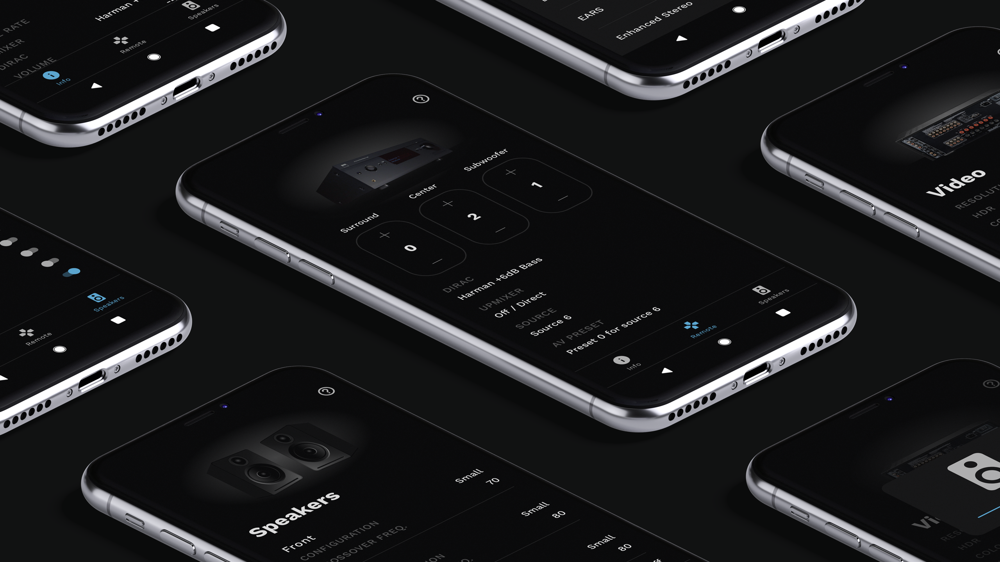

NAD Remote
AVR Remote for NAD is an application that allows users to control their NAD Home Theatre AV receivers directly from their mobile device, and view detailed information on the stream being transmitted to the receiver. This work was commissioned by an independent developer.
This work was commissioned by an independent developer who was looking to re-skin the existing platform to be more in line with NAD and their line of AV receivers.
To speed up development and ensure that we had a common set of components to to refer to, the client decided that we would use Google's Material Design System. Whilst I hadn’t used this particular design system previously, I am familiar with using other libraries and adhering to strict accessibility guidelines, so I was keen to meet this request.
Thanks to the design system and the client’s pace, the app was developed in a number of weeks and currently sits on the Google Play store with a rating of 4.6 out of 5.
You can check the app out here!